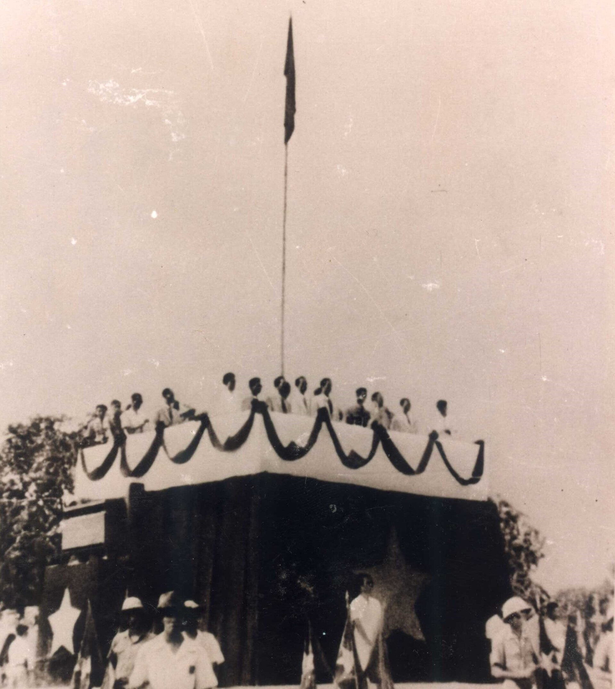
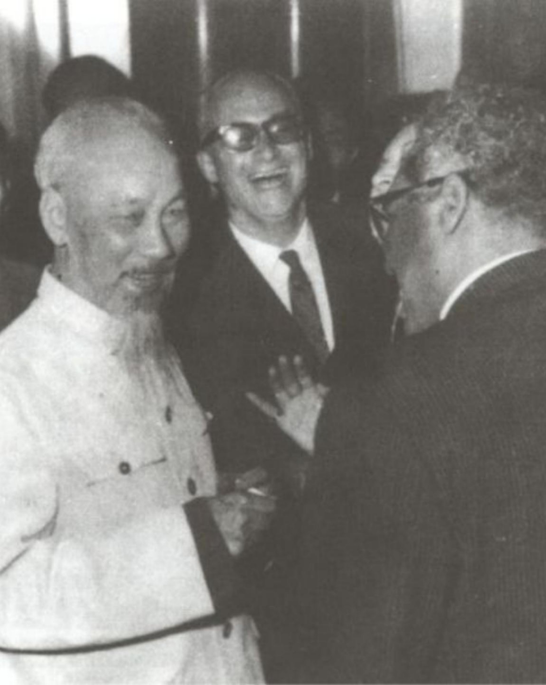
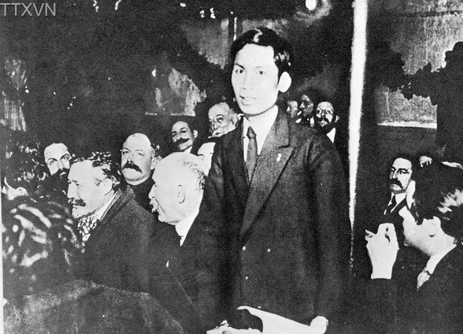
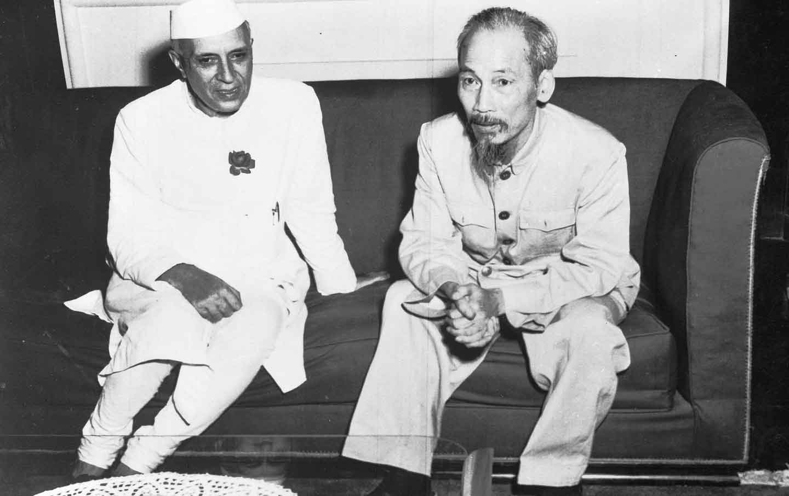
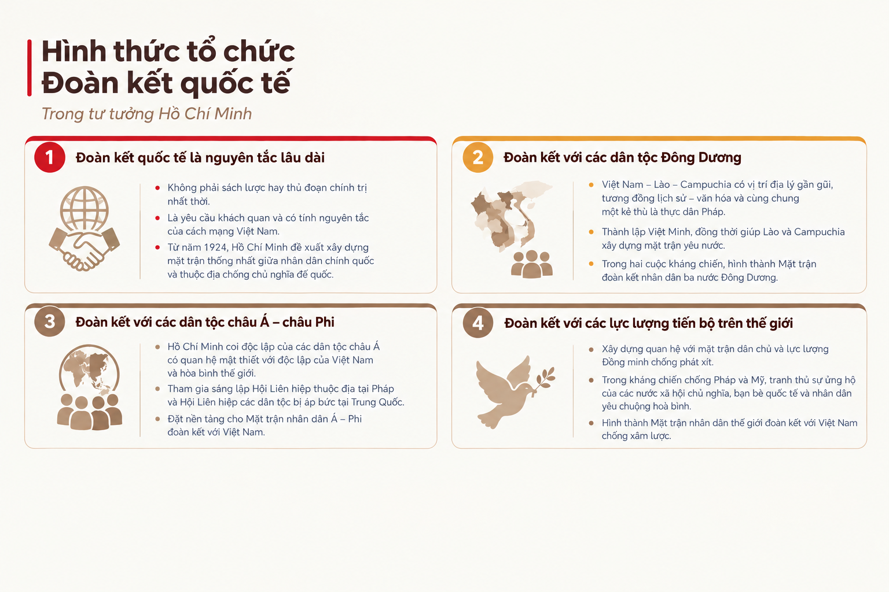
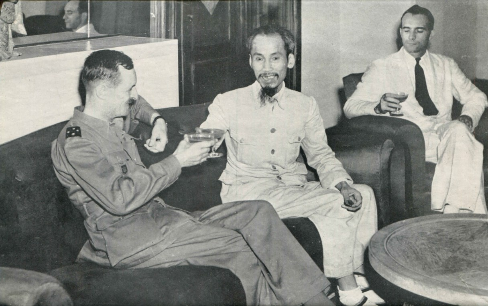

Sức Mạnh Dân Tộc
Là tổng hòa các yếu tố vật chất và tinh thần của dân tộc Việt Nam:
- Chủ nghĩa yêu nước nồng nàn.
- Ý chí tự lực, tự cường dân tộc.
- Tinh thần đoàn kết & đấu tranh anh dũng.

Chuyên đề lý luận & đối ngoạiTư tưởng Hồ Chí Minh
Giải quyết mối quan hệ giữa lợi ích dân tộc và hợp tác quốc tế trong quản trị quốc gia, bảo vệ chủ quyền và hội nhập toàn cầu hiện nay.
Nền tảng lý luận: Kim chỉ nam định hướng đường lối đối ngoại độc lập, tự chủ, đa phương hóa, đa dạng hóa của Đảng và Nhà nước Việt Nam.
Phần I

Phần I • Nguyên tắc ngoại giao Hồ Chí Minh
“Đối với tất cả các nước trên thế giới, nước Việt Nam Dân chủ Cộng hòa thiết tha mong muốn duy trì tình hữu nghị và thành thật hợp tác trên cơ sở bình đẳng và tương trợ để xây dựng hòa bình thế giới lâu dài.”
— Trích: Hồ Chí Minh Toàn tập, Tập 11, NXB Chính trị quốc gia, tr. 269
Chủ trương cốt lõi: Mở rộng quan hệ đối ngoại không phân biệt chế độ chính trị, kiên trì nguyên tắc độc lập, tự chủ.
Giá trị thực tiễn: Đặt nền móng cho chính sách ngoại giao “thêm bạn bớt thù”, lấy chí công vô tư và tình thân thiện chí làm gốc.
Phần I • Nội dung 1
Là tổng hòa các yếu tố vật chất và tinh thần của dân tộc Việt Nam:
Là sức mạnh của các dòng thác cách mạng thế giới:
Tạo nên động lực tổng hợp cho cách mạng:

Phần I • Nội dung 2
Chủ nghĩa yêu nước chân chính phải luôn gắn liền với chủ nghĩa quốc tế vô sản. Đại đoàn kết dân tộc là tiền đề quan trọng cho đoàn kết quốc tế rộng mở.
Đoàn kết quốc tế không chỉ vì lợi ích cách mạng Việt Nam mà còn vì mục tiêu chung của nhân loại: đấu tranh chống chủ nghĩa đế quốc, bảo vệ hòa bình, độc lập và tiến bộ xã hội.
Các Đảng Cộng sản phải kiên trì chống chủ nghĩa cơ hội, chủ nghĩa vị kỷ dân tộc và chủ nghĩa sô-vanh; giáo dục nhân dân tinh thần đoàn kết quốc tế trong sáng.
Phần II

Phần II • Nội dung 1
Lực lượng 01
Lực lượng nòng cốt đảm bảo cho thắng lợi của phong trào cách mạng thế giới.
Lực lượng 02
Liên minh tự nhiên của cách mạng vô sản trong cuộc đấu tranh chống thực dân.
Lực lượng 03
Tập hợp sự ủng hộ rộng rãi của nhân dân tiến bộ toàn cầu.
Phần II • Nội dung 2

Phần II • Nội dung 3
Với phong trào cộng sản & công nhân: Ngọn cờ Độc lập dân tộc gắn liền với Chủ nghĩa xã hội, trên nền tảng chủ nghĩa Mác – Lênin và chủ nghĩa quốc tế vô sản.
Với các dân tộc & lực lượng tiến bộ: Ngọn cờ Độc lập, Tự do, Bình đẳng và Hòa bình chân chính.
"Chính sách đối ngoại của Việt Nam là làm bạn với tất cả mọi nước dân chủ và không gây thù oán với một ai." (Hồ Chí Minh, 1947)
Nội lực là quyết định, ngoại lực là quan trọng: "Tự lực cánh sinh, dựa vào sức mình là chính."
Điều kiện nhận trợ lực quốc tế: "Muốn người ta giúp mình, thì trước hết mình phải tự giúp lấy mình đã."
Thực lực – Ngoại giao: "Phải có thực lực, thực lực là cái chiêng, ngoại giao là cái tiếng, chiêng có to tiếng mới lớn."
Nguồn: Giáo trình Học phần Tư tưởng Hồ Chí Minh (2019), tr. 106–107; Hồ Chí Minh: Toàn tập (2011), NXB Chính trị quốc gia Sự thật, t. 5, tr. 220 & t. 6, tr. 522.
Phần II • Nội dung 4
Chủ nghĩa yêu nước nồng nàn + Ý thức tự lực tự cường + Khối đại đoàn kết toàn dân tộc + Bề dày truyền thống văn hóa kiên cường.
Trào lưu cách mạng thế giới + Chủ nghĩa Mác – Lênin + Phong trào hòa bình, dân chủ, tiến bộ + Luật pháp quốc tế.
Cách mạng Việt Nam là một bộ phận không thể tách rời của cách mạng thế giới.
Biến tranh thủ quốc tế thành sức mạnh thực tế để nhân bội nội lực.
Vừa tranh thủ sự giúp đỡ của bạn bè quốc tế, vừa đóng góp tích cực vào mục tiêu Hòa bình, Độc lập và Tiến bộ của nhân loại.
Nguồn: Giáo trình Học phần Tư tưởng Hồ Chí Minh (2019), tr. 101–103; Hồ Chí Minh: Toàn tập (2011), t. 4, tr. 66 & t. 12, tr. 109.
Phần III
Hội nhập quốc tế toàn diện
Thiết lập quan hệ ngoại giao chính thức với toàn bộ 193 quốc gia thành viên Liên Hợp Quốc.
Nâng cấp quan hệ Đối tác Chiến lược Toàn diện với tất cả 5 nước Thường trực HĐBA LHQ, G7 và ASEAN.
Thực thi các FTA thế hệ mới như CPTPP, EVFTA, RCEP, đưa Việt Nam vào chuỗi cung ứng toàn cầu.
Bối cảnh và tính cấp bách
Đợt dịch thứ 4 lây lan nhanh chóng, đe dọa nghiêm trọng sức khỏe nhân dân và nền kinh tế.
Nguồn cung vắc-xin thế giới vô cùng hiếm hoi, bị các nước phát triển cạnh tranh mua trước gay gắt.
Đảng và Nhà nước kích hoạt Chiến dịch Ngoại giao vắc-xin — cuộc vận động đối ngoại quy mô lớn chưa từng có.
Dữ liệu và nguồn chính thống
Trên 258,5 triệu liều, trong đó nguồn viện trợ quốc tế đạt hơn 50 triệu liều.
Đưa Việt Nam từ tỷ lệ tiêm rất thấp vươn lên 1 trong 6 quốc gia có tỷ lệ bao phủ vắc-xin cao nhất thế giới.
Tiết kiệm cho Ngân sách Nhà nước hàng nghìn tỷ đồng nhờ vận động viện trợ, tài trợ và đàm phán giá gốc.
Tiếp nhận lượng lớn trang thiết bị y tế, thuốc điều trị trị giá hàng trăm triệu USD từ bạn bè quốc tế.

Phân tích lý luận • Trụ cột 1
"Việc gì có lợi cho dân, ta phải hết sức làm. Việc gì có hại cho dân, ta phải hết sức tránh." — Chủ tịch Hồ Chí Minh
Ngoại giao không chỉ dừng ở hồ sơ địa chính trị mà trực tiếp phục vụ nhu cầu sống còn, bảo vệ tính mạng từng người dân.
Lãnh đạo Đảng, Nhà nước trực tiếp thực hiện hàng trăm cuộc điện đàm, tiếp xúc cấp cao với lãnh đạo các nước và các hãng dược phẩm.
Phân tích lý luận • Trụ cột 2
Giữ vững nguyên tắc cốt lõi không thay đổi:
Sáng tạo trong sách lược và phương thức thực hiện:
Phân tích lý luận • Trụ cột 3
Sự đồng lòng hưởng ứng của toàn dân tộc; sự hình thành Quỹ Vắc-xin phòng, chống COVID-19 huy động nguồn lực tài chính to lớn trong nước.
Tranh thủ nguồn viện trợ quốc tế, phát huy uy tín đối ngoại và tình hữu nghị để bạn bè quốc tế hỗ trợ vắc-xin kịp thời.
Kết quả tổng hợp: Giúp Việt Nam "đi sau về trước", chuyển trạng thái từ phòng ngự sang thích ứng an toàn, mở cửa khôi phục và phát triển kinh tế.
Phần IV
Bài học quản trị quốc gia
Hội nhập quốc tế là sự nghiệp của toàn dân; kết hợp sức mạnh dân tộc với sức mạnh thời đại để xây dựng và bảo vệ Tổ quốc.
"Chủ động và tích cực hội nhập quốc tế toàn diện, sâu rộng, linh hoạt, hiệu quả vì lợi ích quốc gia – dân tộc, bảo đảm độc lập, tự chủ, chủ quyền quốc gia."
Vận dụng bài học "Dĩ bất biến, ứng vạn biến": kiên định mục tiêu độc lập dân tộc và chủ nghĩa xã hội; linh hoạt, uyển chuyển trong phương thức hợp tác.
Hành trang thế hệ trẻ
Quán triệt tinh thần "Hòa nhập chứ không hòa tan"; bảo vệ nền tảng tư tưởng của Đảng, chủ động phản bác các quan điểm sai trái trên không gian mạng.
Chủ động làm chủ công nghệ, trí tuệ nhân tạo (AI), nâng cao năng lực tư duy toàn cầu để làm việc trong môi trường đa văn hóa.
Mỗi sinh viên là một "Đại sứ văn hóa", chủ động giới thiệu giá trị lịch sử, con người Việt Nam tới bạn bè quốc tế.
Thực hành "Cần, Kiệm, Liêm, Chính", tích cực tham gia các hoạt động tình nguyện quốc tế và giao lưu thanh niên toàn cầu.
Nhóm 8 trân trọng
Xin Cảm Ơn!
Cảm ơn thầy/cô và các bạn đã lắng nghe bài thuyết trình của Nhóm 8.
Kéo thả hoặc dùng ↑ ↓ để đổi vị trí. Thay đổi được lưu trên trình duyệt này.